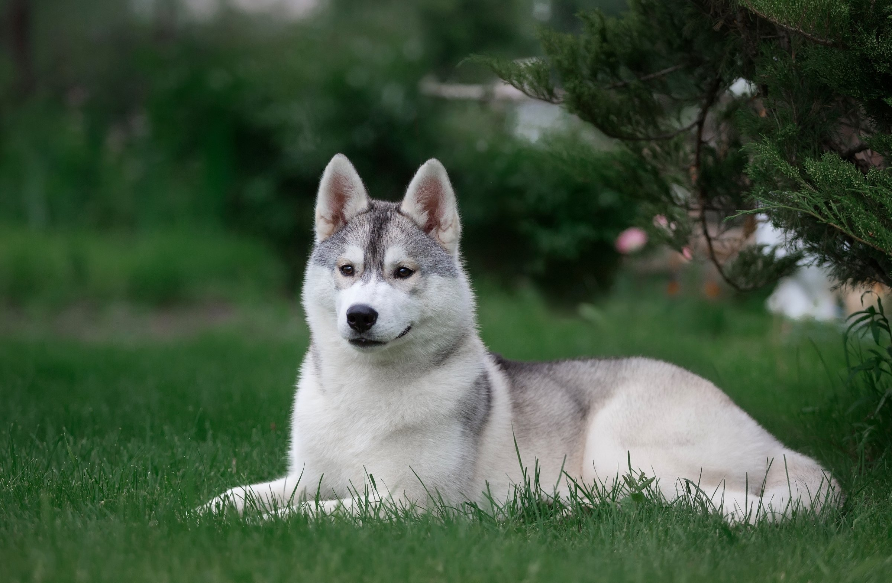
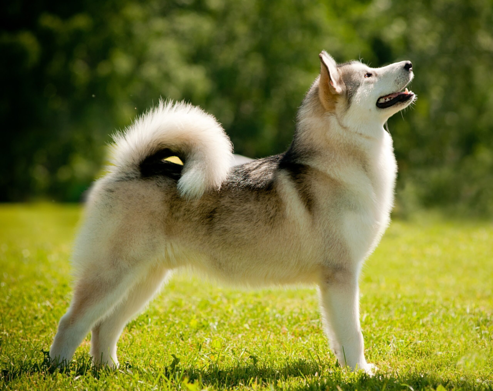
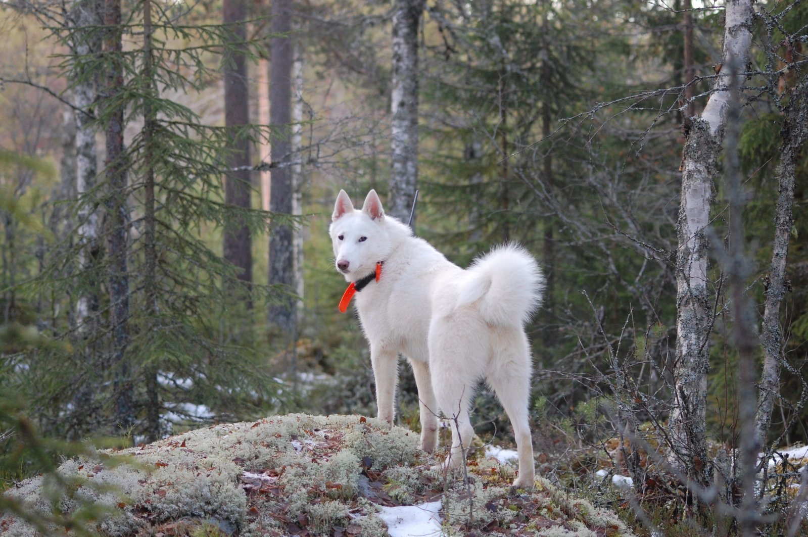
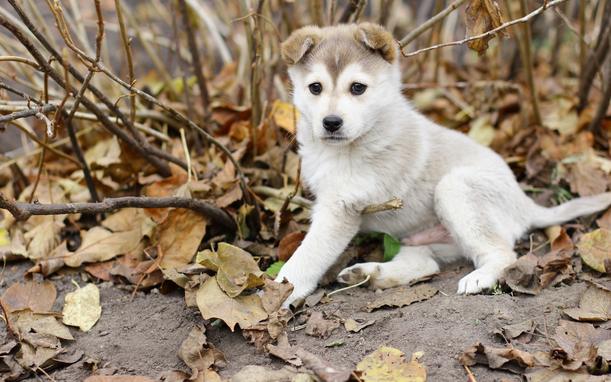

Собаки породы лайка – одни из древнейших четвероногих, выведенные жителями северных регионов Европы, Азии и Северной Америки. Их визитные карточки – эффектная внешность, придающая сходство с дикими волками, и звучный голос, используемый для отвлечения зверя во время охоты. Ниже вы сможете познакомиться с другими особенностями этих животных, а также узнать, какие из разновидностей подходят для упряжек и выпаса скота.
Общая информация о собаках породы лайка



Лайки – собаки аборигенного происхождения, почти полностью сохранившие свой первоначальный вид. Несмотря на некоторые разтличия, все они имеют общие черты во внешности и характере.